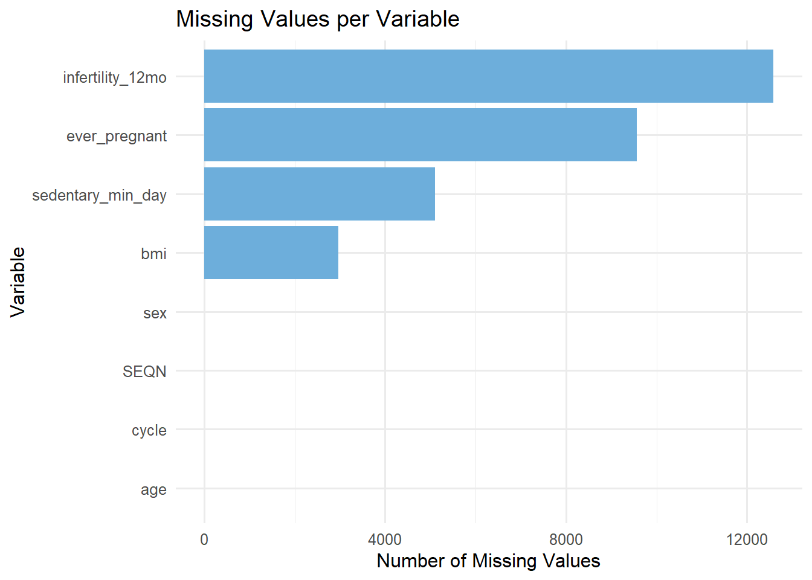
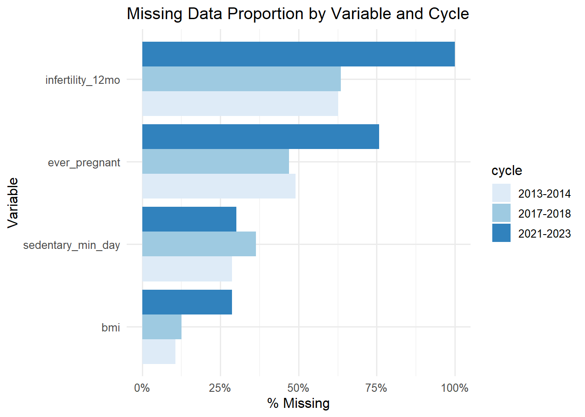
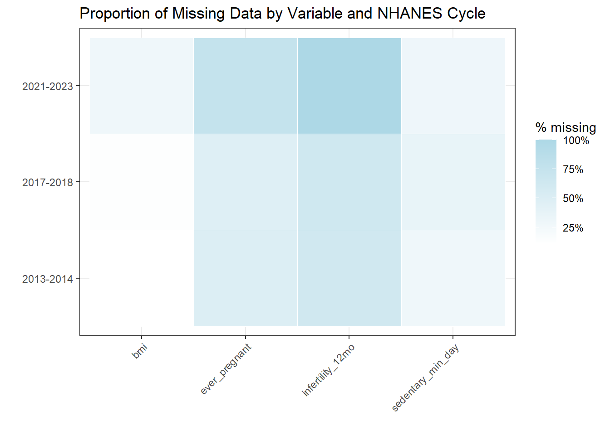
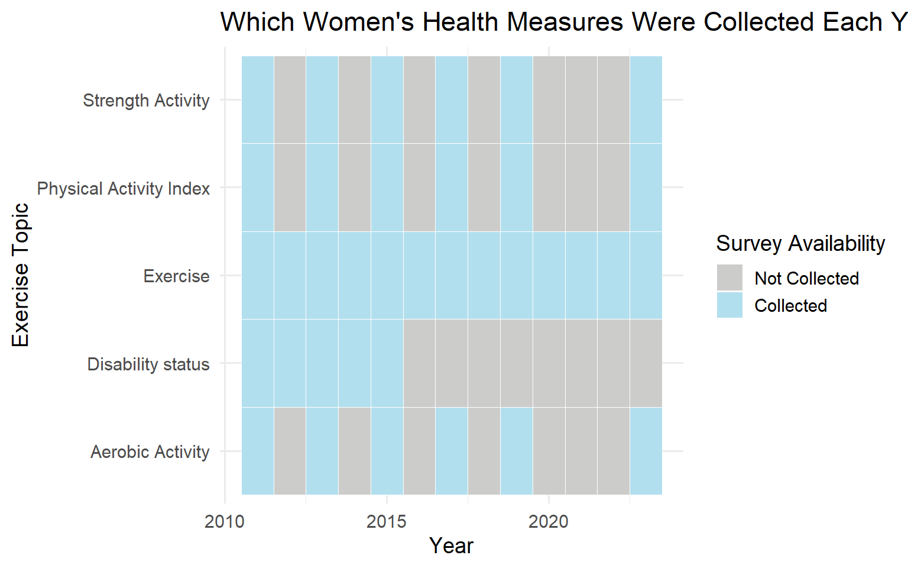

Code
library(haven)
library(dplyr)
library(tidyverse)
library(ggplot2)
library(forcats)library(haven)
library(dplyr)
library(tidyverse)
library(ggplot2)
library(forcats)# DEMO
demo_13 <- read_xpt("DEMO_13_14.XPT")
demo_17 <- read_xpt("DEMO_17_18.XPT")
demo_21 <- read_xpt("DEMO_21_23.XPT")
# BMI Body Measures (BMX)
bmx_13 <- read_xpt("BMX_13_14.XPT")
bmx_17 <- read_xpt("BMX_17_18.XPT")
bmx_21 <- read_xpt("BMX_21_23.XPT")
# Reproductive Health (RHQ)
repro_13 <- read_xpt("RHQ_13_14.XPT")
repro_17 <- read_xpt("RHQ_17_18.XPT")
repro_21 <- read_xpt("RHQ_21_23.XPT")
# Physical Activity (PAQ)
activity_13 <- read_xpt("PAQ_13_14.XPT")
activity_17 <- read_xpt("PAQ_17_18.XPT")
activity_21 <- read_xpt("PAQ_21_23.XPT")# 2013–2014
activity_13_clean <- activity_13 |>
mutate(
PAD680 = na_if(PAD680, 7777),
PAD680 = na_if(PAD680, 9999)
)
# note: SEQN is still here!
# 2017–2018
activity_17_clean <- activity_17 |>
mutate(
PAD680 = na_if(PAD680, 7777),
PAD680 = na_if(PAD680, 9999)
)
# 2021–2023
activity_21_clean <- activity_21 |>
mutate(
PAD680 = na_if(PAD680, 7777),
PAD680 = na_if(PAD680, 9999)
)
nhanes_13 <- demo_13 |>
select(SEQN, RIDAGEYR,RIAGENDR) |>
left_join(bmx_13 |> select(SEQN, BMXBMI), by = "SEQN") |>
left_join(repro_13 |> select(SEQN, RHQ131, RHQ074), by = "SEQN") |>
left_join(activity_13_clean |> select(SEQN, PAD680), by = "SEQN") |>
rename(
age = RIDAGEYR,
sex = RIAGENDR,
bmi = BMXBMI,
ever_pregnant = RHQ131,
infertility_12mo = RHQ074,
sedentary_min_day = PAD680
) |>
mutate(cycle = "2013-2014")
nhanes_17 <- demo_17 |>
select(SEQN, RIDAGEYR,RIAGENDR) |>
left_join(bmx_17 |> select(SEQN, BMXBMI), by = "SEQN") |>
left_join(repro_17 |> select(SEQN, RHQ131, RHQ074), by = "SEQN") |>
left_join(activity_17_clean |> select(SEQN, PAD680), by = "SEQN") |>
rename(
age = RIDAGEYR,
sex = RIAGENDR,
bmi = BMXBMI,
ever_pregnant = RHQ131,
infertility_12mo = RHQ074,
sedentary_min_day = PAD680
) |>
mutate(cycle = "2017-2018")
nhanes_21 <- demo_21 |>
select(SEQN, RIDAGEYR,RIAGENDR) |>
left_join(bmx_21 |> select(SEQN, BMXBMI), by = "SEQN") |>
left_join(repro_21 |> select(SEQN, RHQ131), by = "SEQN") |>
left_join(activity_21_clean |> select(SEQN, PAD680), by = "SEQN") |>
rename(
age = RIDAGEYR,
sex = RIAGENDR,
bmi = BMXBMI,
ever_pregnant = RHQ131,
sedentary_min_day = PAD680
#infertility_12mo = RHQ074 does not exist
) |>
mutate(cycle = "2021-2023")
# activity_21_clean <- activity_21 |>
# mutate(
# # Missing codes
# PAD810Q = na_if(PAD810Q, 7777),
# PAD810Q = na_if(PAD810Q, 9999),
# PAD820 = na_if(PAD820, 7777),
# PAD820 = na_if(PAD820, 9999),
#
# freq_per_day = case_when(
# PAD810U == "D" ~ PAD810Q,
# PAD810U == "W" ~ PAD810Q / 7,
# PAD810U == "M" ~ PAD810Q * (12/365),
# PAD810U == "Y" ~ PAD810Q / 365,
# TRUE ~ NA_real_
# ),
#
# vigorous_min_day = freq_per_day * PAD820
# )
nhanes_all <- bind_rows(nhanes_13, nhanes_17, nhanes_21)
#FILTER FOR WOMEN
nhanes_w <- nhanes_all |>
filter(sex == 2)
write.csv(nhanes_w, "nhanes_women.csv", row.names = FALSE)
nhanes_women <- read.csv("nhanes_women.csv")
#head(nhanes_women)#second dataset
#each row in this dataset is a pre calculated summary statistic
BRF <- read.csv("Behavioral_Risk_Factor_Surveillance_System.csv")
# women_brf <- BRF |>
# filter(Break_Out_Category == "Sex",
# Break_Out == "Female",
# Response == "Yes")
#head(women_brf)
#write.csv(women_brf, "women_brf.csv", row.names = FALSE)
women_brf <- read.csv("women_brf.csv")#NHANES
Data is primarily collected through household visits by government personnel. Questionnaires are conducted with those chosen to participate, there is also a mobile examination for the collection of health data. The surveys include continuous data over two year periods. The data files are split out by topic: ie Demographic, BMI, and Reproductive Health, and Physical Activity data files in XPT format.
Unfortunately, I ended up finding this dataset difficult to work with for several reasons. They had warned on the CDC page that fewer Americans are taking the time to fill out these surveys,but there was a lot more missing data than I anticipated. Additionally, after Covid, they made a large number of changes, and several of the features I wanted to look at did not exist in the 2021-2023 cycle. I had tried for a bit to mutate some of the physical activity data in the 21-23 cycle to make it comparable to plot with the other two cycles. But after a bit I decided it was best to use the sedentary feature which had remained consistent. I had also really wanted to incorporate some spatial graphics, and this data did not include any information about respondent location.
Because of all this, I decided it would be best to find a second dataset to better support the analysis I wanted to complete.
#BFSS
The second dataset I selected to work with was the CDC’s Behavioral Risk Factor Surveillance System. On the CDC website, I was able to filter for the main features I wanted to look at before downloading: Overall Exercise, Aerobic Exercise, and Strength. After loading the data in I did some additional cleaning to filter for women, as I didn’t want to do too much filtering on their site to keep my project reproducable.
In my first pass, I plotted all years together to get a general sense of overarching patterns in the data that is missing.
nhanes_women |>
summarise(across(everything(), ~ sum(is.na(.)))) |>
pivot_longer(cols = everything(),
names_to = "variable",
values_to = "missing") |>
ggplot(aes(x = reorder(variable, missing), y = missing)) +
geom_col(fill = "#6DAEDB") +
coord_flip() +
labs(title = "Missing Values per Variable",
x = "Variable",
y = "Number of Missing Values") +
theme_minimal(base_size = 12)
Once I saw that only a handfull of features were missing, I dug into this a bit more to understand the variance across survey cycles:
ggplot(
nhanes_women |>
group_by(cycle) |>
summarise(across(
c("bmi", "ever_pregnant", "infertility_12mo", "sedentary_min_day"),
~ mean(is.na(.))
)) |>
pivot_longer(cols = -cycle,
names_to = "variable",
values_to = "missing_prop"),
aes(x = fct_reorder(variable, missing_prop),
y = missing_prop,
fill = cycle)
) +
geom_col(position = "dodge") +
coord_flip() +
scale_fill_brewer(palette = "Blues") +
scale_y_continuous(labels = scales::percent_format()) +
labs(title = "Missing Data Proportion by Variable and Cycle",
x = "Variable",
y = "% Missing") +
theme_minimal(base_size = 12)
vars <- c("bmi", "ever_pregnant", "infertility_12mo", "sedentary_min_day")
miss_prop <- nhanes_women |>
select(cycle, all_of(vars)) |>
pivot_longer(
cols = -cycle,
names_to = "variable",
values_to = "value"
) |>
group_by(cycle, variable) |>
summarise(prop_missing = mean(is.na(value)), .groups = "drop")
#miss_propThen I decided to see this as a heatmap to get a better visualization of the spread:
ggplot(miss_prop,
aes(x = variable, y = cycle, fill = prop_missing)) +
geom_tile(color = "white") +
scale_fill_gradient(low = "white", high = "lightblue",
labels = scales::percent_format(accuracy = 1),
name = "% missing") +
labs(
title = "Proportion of Missing Data by Variable and NHANES Cycle",
x = "",
y = ""
) +
theme_bw() +
theme(
axis.text.x = element_text(angle = 45, hjust = 1)
)
This is when I noticed the extent to which some of the variables I wanted to work with wouldn’t be feasible and decided it would be beneficial to bring in a second dataset to support my trend analysis.
presence_df <- women_brf %>%
distinct(Year, Topic) %>%
mutate(present = 1)
# Create full grid of all Year × Topic combinations
full_grid <- expand.grid(
Year = unique(women_brf$Year),
Topic = unique(women_brf$Topic)
)
presence_matrix <- full_grid %>%
left_join(presence_df, by = c("Year", "Topic")) %>%
mutate(present = ifelse(is.na(present), 0, present))
ggplot(presence_matrix, aes(x = Year, y = Topic, fill = factor(present))) +
geom_tile(color = "white") +
scale_fill_manual(
values = c("0" = "#cccccb", "1" = "lightblue2"),
labels = c("Not Collected", "Collected"),
name = "Survey Availability"
) +
labs(
title = "Which Women's Health Measures Were Collected Each Year?",
x = "Year",
y = "Exercise Topic"
) +
theme_minimal(base_size = 14)